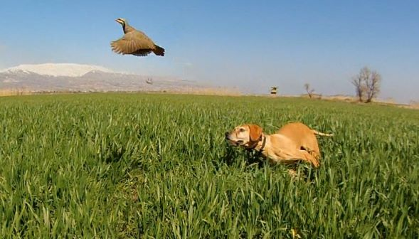

المطوق :
يتواجد في الأماكن شبه الصحراوية والاراضي العارية والجافة والمناطق المزوعة كسهل البقاع وسهول الجنوب يعشعش بين آذار وآب ويكثر أثناء العبور في تشرين الثاني قادما من الشمال الى الجنوب.
الصلنج :
طائر مقيم في لبنان وتضاف اليه اعداد مهاجرة وأخرى مشتية واصبح يميل الى التدجين بسبب التصاقه بالانسان كالدوري ، يكثر صيده في تشرين الاول والثاني مع موسم السمن .
الفري:
يفرخ منه القليل عندنا ويشتي منه القليل ولكن يمر منه الكثير خاصة بين أول ايلول ونهاية تشرين .
دجاج الأرض:
يأتي دجاج الارض ابتداء من منتصف تشرين الأول ويمكن صيده حتى اواخر كانون الثاني، يتواجد عادة في الاحراش.
الحمام البري والجبلي :
يتواجد الحمام الجبلي في الجبال والوديان الصخرية اما الحمام البري فيختار المناطق المفتوحة التي تتواجد فيها اشجار قديمة ويتزواج الحمام البري والجبلي ويختلط معه في معظم أماكن تواجده القريبة من الانسان، والحمام موجود على مدار السنة ،ويتم صيده على مدار موسم الصيد .
الدلم :
الدلم او حمام الغابات يأتي بأعداد معقولة خلال تشرين الأول وتشرين الثاني ويستمر قدوم المشتي منه بأعداد أقل ، ما عدا ايام الصقيع فيأتي قرابة رأس السنة بالالاف ويمكن صيده حتى اواخر كانون الثاني.
الترغل :
يعشعش في لبنان بعد ان يأتي من الخارج الجنوبي بين منتصف نيسان ومنتصف آب ويغادر مع أول ايلول جنوبا للإشتاء يسمح بصيد العابر فقط بين اول ايلول واخر تشرين الثاني وذروة العبور في ايلول .
السمّن الأحمر:
السمّن الأحمر الجانب او السمّن المصري، يعبر لبنان بأعداد قليلة منذ بداية تشرين الثاني وحتى منتصف كانون الأول ثم يأتي السمّن المشتي منه منذ اوائل كانون الأول ويمكن صيده حتى أواخر كانون الثاني ، والجدير بالذكر ان اعداده تتناقص سنة بعد سنة .
سمّنة الدبق:
سمّنة الدبق او ما يسمى بكيخن اللزاب يفرخ عدد قليل منها في غابات الشمال ويمر عدد قليل منها أواخر تشرين الأول ثم يكثر العدد بعد ذلك ويمكن صيدها حتى اواخر كانون الثاني.
السمّنة :
السمّن المغرد (السمّنة) يمر بكثرة منذ بداية تشرين الأول وحتى نهاية تشرين الثاني ويشتي عدد قليل منها منذ نهاية تشرين الثاني ويمكن صيدها حتى اواخر كانون الثاني.
الكيخن:
سمّنة الحقول او كيخن التفاح قليل التواجد اثناء الهجرة التي تبدأ في اوائل تشرين الثاني وقليل العدد في الشتاء ، ولهذا ينصح بالصيد القليل منه كي لا ينقرض.
البط الخضاري والحذف الشتوي والصيفي:
يفرّخ بغير انتظام ينتشر بأعداد وفيرة طيلة فترة الصيد من أول ايلول وحتى آخر كانون الثاني .
الحجل:
يعيش في الاراضي الصخرية الجبلية وهو طائر مقيم غير مهاجر وهو اصعب طيور الصيد ويحتاج الى صيادين قادرين على المشي ساعات طوال في المناطق الجردية . يصطاده الصيادون خلال موسم الصيد فقط ويهتمون على مدار السنة في المحافظة عليه لما يمثل من رمز للصياد اللبناني .
الصورة من ارشيف الصياد اللبناني سامر بربري